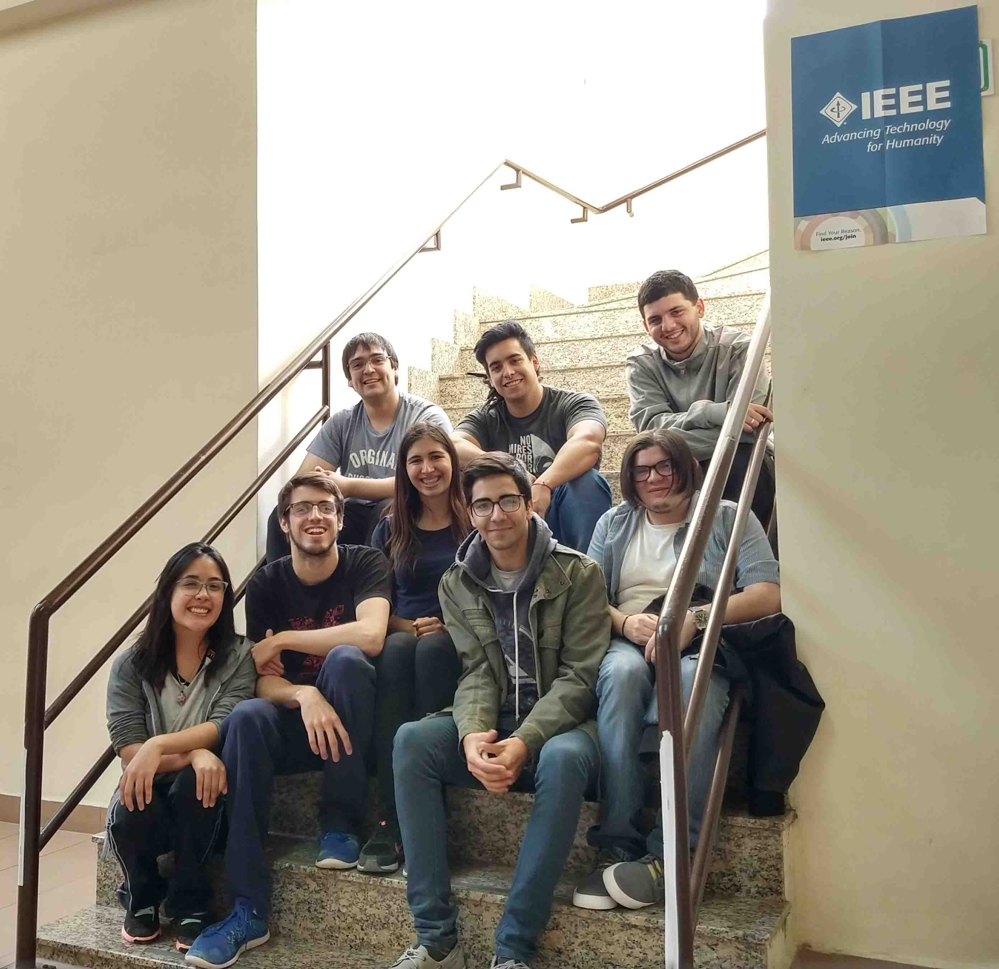

Inscripción para disertantes: Estamos organizando las Jornadas de Electrónica y Ciencias de la Computación 2020 en formato virtual. La misma se realizara del 24 al 28 de Agosto de 2020 donde participaran diferentes expositores contándonos sobre distintos campos de la Electrónica y Ciencias de la Computación. Por el momento esta abierta la inscripción para ser disertante. Para mas info: Web Jornadas 2020
La misma será dada por José Joao quién se graduó de Ingeniero Electrónico y Analista Programador Universitario, también fue docente de nuestra Universidad y fundador de la Rama Estudiantil del IEEE. Actualmente José reside en Austin, Texas y forma parte del grupo de investigación de Arquitectura de Computadoras. Durante esta charla, José compartirá algunas de sus experiencias en nuestra Universidad, su paso por la Universidad de Austin y actualmente su trabajo.
Muchos de los experimentos con SDRs baratos se reducen a tener que usar pasivamente un software de terceros; por eso Gonzalo Carracedo Carballal presentará las motivaciones que lo llevaron a desarrollar SigDigger, su mantenimiento en un repositorio oficial de Arch Linux y el uso práctico en CTF y radioastronomía.
Las Jornadas de Electrónica consisten en la difusión de las actividades de grupos de investigación del Departamento de Electrónica y de estudiantes de posgrado, así como también las experiencias y desarrollos de profesionales de entidades relacionadas con las áreas de interés de la carrera. Durante los días 28 y 29 de Noviembre contamos con presencia de disertantes alumnos, profesores y de las empresas YPF LUZ, Hychico CAPSA, NRG Patagonia, AESA YPF. (Para ver más fotos y las presentaciones) Página Web de la 5ta Jornada
Los días 5, 6 y 7 de Septiembre asistimos a la Reunión Nacional de Ramas realizada en Bahía Blanca, donde compartimos con las distintas Ramas del país. Durante las jornadas, varios investigadores de la Universidad Nacional del Sur expusieron sus investigaciones. Además, participamos de actividades de compañerísmo, capacitaciones y visitas técnicas.
El día viernes 23 de Agosto se realizó la charla: "Estudios de posgrado y experiencias de investigación: En Alcalá de Henares, España" dónde el Mg. Ing. Santiago Murano contó su experiencia del doctorado que está realizando en España "Sistemas de posicionamiento ultrasónicos".
Los días 17, 18 y 19 de Julio asistimos al Simposio Argentino de Sistemas Embebidos (SASE) en la Universidad Nacional de Rosario, donde se participó en tutoriales y workshops. En el congreso se trataron temas relacionados a Internet of Things (IoT), programación de sistemas embebidos, robótica, Linux.
Alumnos de Geología de nuestra Universidad nos convocaron para ayudarlos a configurar el proyecto AR SandBox, se trata de una implementación de una maqueta de realidad virtual que se utiliza para explicar de manera más real e intuitiva curvas de nivel y el estudio que se realiza en Topografía.
A principios de Junio 2019 se realizó un taller de reconocimiento de componentes electrónicos. Asistieron alumnos de nivel secundario e ingresantes de la carrera Ingeniería Electrónica. En este taller se explicó la diferencia de las tecnologías de encapsulación de componentes y se reconocieron los códigos que identifican su valor comercial y tolerancia.
El 22 de Mayo de 2019 se realizó "La Uni te Recibe", un evento en el cual asisten futuros aspirantes a carreras de grado. La Rama Estudiantil participó en el stand de Ingeniería Electrónica donde se mostraron distintos proyectos y se comentó a los asistentes las actividades que se realizan en la carrera.
Semanas previas a la fiesta de Pascua se realizó una rifa para obtener fondos y financiar los elementos necesarios en actividades de la Rama Estudiantil.
A principios de Marzo de 2019 se comenzó a gestar la reactivación de la Rama Estudiantil en la sede de Comodoro Rivadavia, se realizó una reunion entre los interesados por formar parte y se creó una comision directiva local.
|

|
¿Quiénes somos?La Rama Estudiantil de la Universidad Nacional de la Patagonia nació el 11 de Noviembre de 1995, donde alumnos de la sede de Comodoro Rivadavia organizaron las primeras Jornadas de Electrónica. Somos un grupo de alumnos de las carreras de Licenciatura en Informática e Ingeniería Electrónica que realizamos actividades, multidisciplinarias, que nos proporcionan nuevos conocimientos y habilidades. ¿Qué representa nuestro logo?Como base utiliza el logo original de IEEE, el barrilete conmemora el famoso experimento de electricidad realizado por Benjamín Franklin, en su interior, donde originalmente se encontraría la regla de la mano derecha, se encuentra un albatro, símbolo de la UNPSJB y fauna carácterística de las costas Patagónicas. |
Chair: Santiago Nuñez
sanntinunez@ieee.org

Vice Chair: Daniel Ulloa
ulloa@ieee.org

Secretary: Federico Garcia
federicogarcia@ieee.org
Treasurer: Daniela Caamina
dcaamina@ieee.org
Webmaster: Ana Victoria Rodriguez
avr@ieee.org
El Instituto de Ingeniería Eléctrica y Electrónica (conocido por sus siglas IEEE, en inglés Institute of Electrical and Electronics Engineers) es una asociación mundial de ingenieros dedicada a la normalización y el desarrollo en áreas técnicas. Con miles de miembros y voluntarios en 160 países, es la mayor asociación internacional sin ánimo de lucro formada por profesionales de las nuevas tecnologías, como lo son electricidad, electrónica, sistemas y computación, matemática aplicada, biomedicina, telecomunicación, entre otras.
Ser miembro o voluntario tiene múltiples beneficios:
Rama Estudiantil IEEE UNPSJB - Chubut - Argentina - 2020